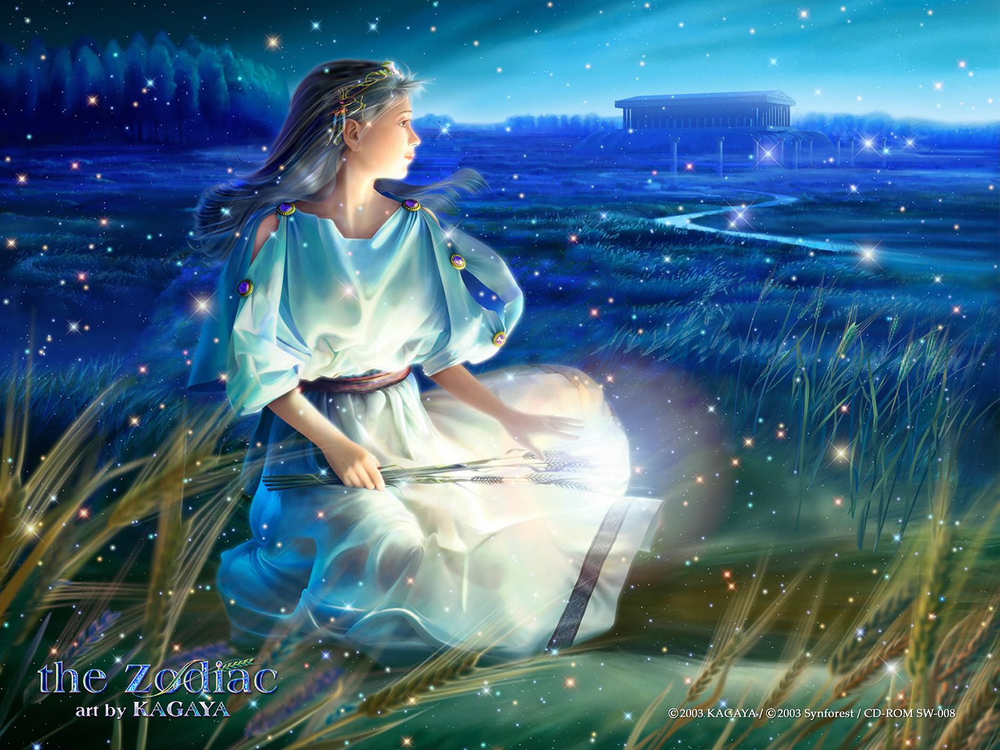
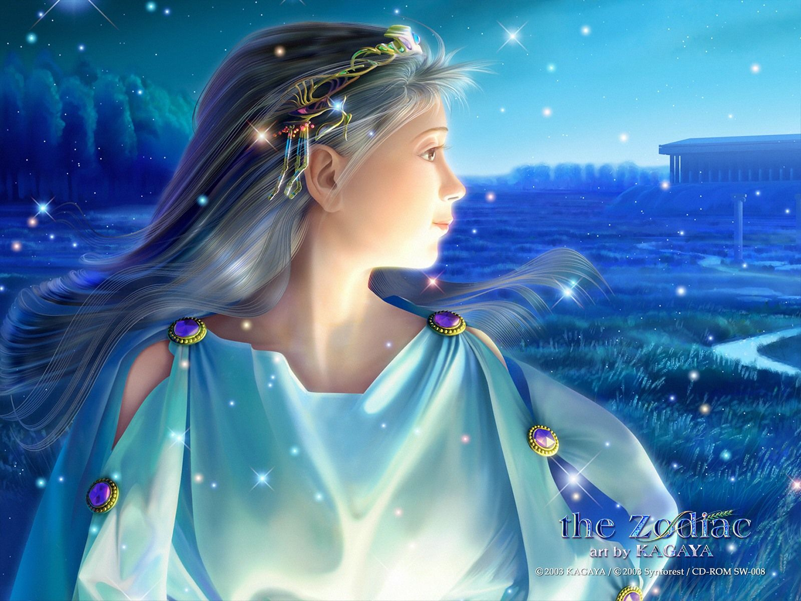
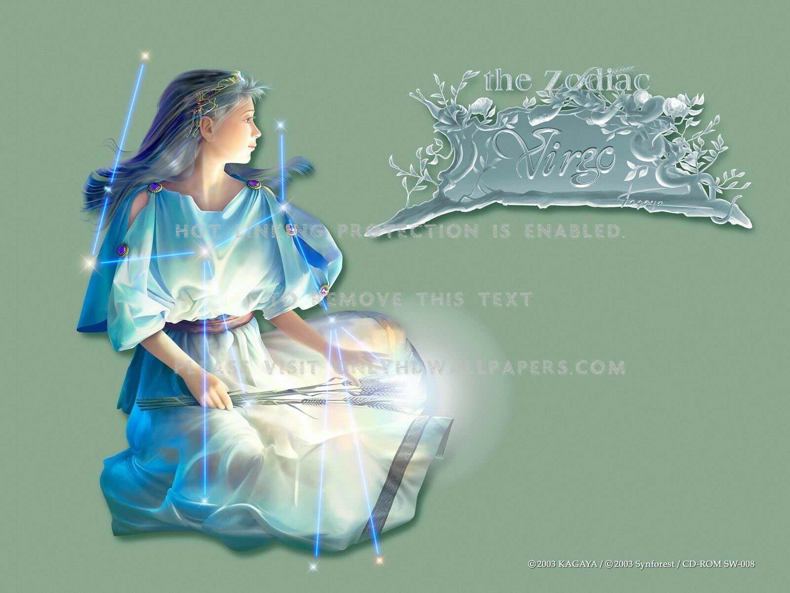
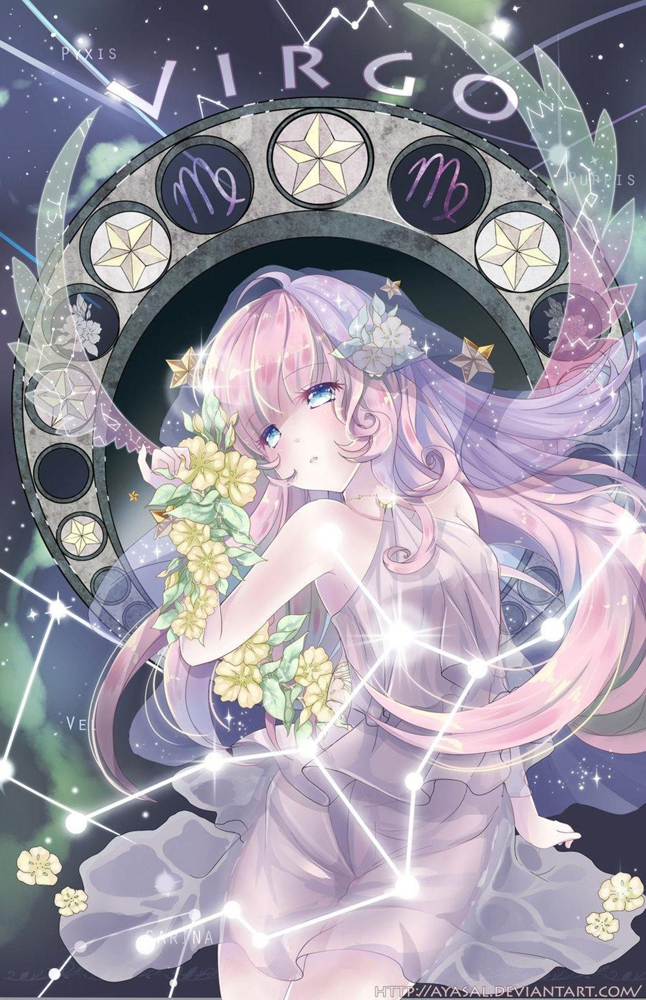

XỬ NỮ
Là biểu tượng của đất. Sao chiếu mệnh là sao Thuỷ. Người cung Virgo rất tỉ mỉ, kĩ càng, có năng lực, khá khắt khe và có lý lẽ. Đối với họ, tiền rất quan trọng và dù họ sống trong điều kiện dư dả, nhưng họ ghét sự lãng phí. Họ yêu căn nhà của họ và trang bị nó với những thứ yêu thích một cách nghiêm trang và ngăn nắp.
Là một người dễ dao động, họ cần những lời khen, nhưng họ cũng được quý trọng trong công việc vì trí thông minh vượt trội của họ. Những công việc thích hợp cho người Virgo: người vẽ kỹ thuật, giáo viên, người biên tập, nhà hoá học, người phân tích. Người Virgo cần được yêu và họ tin vào tình bạn, dù cho – đúng với sự nhút nhát và sống nội tâm của họ – họ vẫn khó có thể sống trọn đời với người mình yêu.
2, Mô tảNếu Song Tử là những người khó đoán, Cự Giải là kiểu người khó hiểu thì chòm Sao Xử Nữ là chòm sao khó phân tích nhất trong Cung Hoàng Đạo. Mọi người nghĩ họ hay om sòm, nóng tính và cầu kỳ nhưng đó chỉ vì họ muốn mọi thứ phải hoàn hảo.
Tính cách kỳ lạ nhất của Xử Nữ là dù cuộc sống và tình yêu của họ có chìm nổi thế nào, họ vẫn một lòng trung thành với mọi người, không hề có chút hoài nghi. Họ khá khéo tay, tốt bụng nhưng đôi khi ưa lợi dụng người khác.
Xử Nữ biểu tượng cho tính sạch sẽ, mặc dù nhiều người Xử Nữ hay vứt quần áo dưới sàn nhà và để phòng ngủ bừa bộn. Họ sẽ là những người bạn tâm tình lý tưởng, vui vẻ và hữu ích. Nếu có rắc rối bất ngờ xảy ra bạn đều có thể chắc rằng người bạn Xữ Nữ sẽ giải quyết chúng một cách nhẹ nhàng và tế nhị.
Xử Nữ như loài phong lan rừng hoang dại mà độc đáo, họ cần tình yêu chân thành nở bung vẻ đẹp tự nhiên và rực rỡ của mình.
Người tuổi Xử Nữ có tinh thần quảng đại, bao dung, lịch sự. Bản chất của họ là trí thức, nhanh nhẹn và hoạt bát. Họ rất khéo léo trong mọi công việc, và luôn luôn tuân theo nguyên tắc và luật lệ. Họ không hài lòng khi công việc hay dự tính chưa hoàn thành theo ý muốn. Những thành qủa của họ đạt được thường là do chính họ tạo ra.
Họ là mẫu người thực tế, hết lòng chăm sóc gia đình và thường hay giúp đỡ mọi người. Họ cũng hay bình phẩm, xét lại, phân tích, khắc khổ, và bất mãn khi công việc không như ý. Họ thường rất có uy tín khi được giao phó một trách nhiệm hay công việc gì.
Tình yêu của người tuổi này thường hay đến trong muộn màng. Họ xem tình yêu là một sự xây dựng chứ không phải là những giây phút lãng mạn thoáng qua, do đó họ rất thực tế trong tình yêu, và khi đã nhận thức được sự khác biệt thực tiễn rồi, thì họ thường hay tự rút lui, hay đi tìm cho mình những cuộc tình khác chỉ vì cảm thấy thiếu thốn hoặc nuối tiếc những lạc thú mà họ đã đạt được.
3, Tính cách cơ bảnVề khuynh hướng tư tưởng, họ là người theo chủ nghĩa thuần tuý, cho dù tâm hồn họ ở chín tầng mây hay đang phiêu du trong gió, nhưng đôi chân của họ lại luôn đứng vững trên mặt đất. “Tinh thần cao hơn vật chất” là chuẩn tắc mà họ tuyên truyền và thực hiện. Nhưng cho dù thế giới tinh thần của họ trong sạch giống như một hồ nước trong vắt, thì thế giới vật chất mà tinh thần chi phối lai là mặt đất vững chắc. Họ là những người theo đuổi trí tuệ và chân lý không biết mệt mỏi, và điều mà họ kém nhất là chơi những trò chơi quái ác và thực hiện những vụ giao dịch không chính đáng.
Sự coi trọng đối với sự thuần khiết và hoàn mỹ đã quyết định cách phát triển tự thân của Xử Nữ, cho dù điều mà phần lớn mà họ quan tâm chú ý là diện mạo bên ngoài của mình mà không phải là những sắp xếp bên trong căn phòng. Họ ra sức làm cho mình trở nên đáng yêu, vì vậy, việc ăn uống, thể dục thẩm mỹ và các trang phục hợp mốt luôn được họ nghiên cứu kĩ lưỡng. Họ rất ghét những khuyết tật về mặt tư tưởng và thân thể.
Trong căn phòng của họ, tất cả mọi thức đều có vị trí riêng của nó. Trong gian phòng của họ không nhất định là phải không có một chút bụi nào, nhưng lại khá giản dị, không loè loẹt, không khoa trương chút nào, tất cả đều đơn giản thuận tiện. Nhiệt tình đối với công việc không được đặt lên trên cuộc sống gia đình, trừ phi đầu óc họ không có việc gì đáng để vắt óc suy nghĩ và có thể đem lại cảm giác thoả mãn.
Họ không bao giờ tự phụ hoặc ra oai với ai, luôn cẩn thận, có trước có sau, và lúc nào cũng sẵn sàng giúp đỡ người khác. Cho dù như vậy Xử Nữ hoàn toàn không dễ sống chung. Họ luôn kêu ca không dứt về những vấn đề nhỏ nhặt, rất không vừa ý đối với những công việc chưa hoàn thành, khi bản thân rơi vào hoàn cảnh khó khăn, họ thậm chí sẽ đem tổng thuật lại những khuyết điểm của những người xung quanh họ một cách tỉ mỉ, chính xác.
Vì họ rất thích hoàn thiện bản thân, vì vậy bất cứ ý đồ nào định phê bình họ, hoặc là sẽ khiến cho họ bừng bừng nổi giận, hoặc là sẽ dẫn đến sự căm giận trong lòng, chính như biểu hiện của hình tượng người con gái hoàn mỹ, họ cho rằng nên sống trong một thế giới hoàn mỹ. Thế giới mà chúng ta sống rõ ràng là không hoàn mỹ, họ luôn phấn đầu không ngừng để sửa chữa những tình huống làm cho người khác bị tổn thương.
4, Phương thức tư duy, kỹ xảo giao lưu và khả năng thích ứng với công việcCó thể chắc chắn rằng, Xử Nữ có thể tìm cách giải quyết được những phiền phức (của bản thân hoặc của người khác), vì họ không bao giờ cảm thấy bối rối, mà họ luôn phân tích cẩn thận vấn đề, loại bỏ đi những phần không liên quan, chú trọng vào những nhân tố bản chất. Phương pháp này có vẻ vụn vặt không có gì hứng thú, nhưng quyết định đạt được từ đó lại được xây dựng trên cơ sở suy luận rõ ràng, hơn nữa họ không chịu ảnh hưởng của những khuếch đại tình cảm.
Nhưng, điều khiến cho người ta cảm thấy rất đáng tiếc, điều này hoàn toàn không đủ để hình thành nên sự giao hảo hoặc tình bạn thân thiết, nguyên nhân cũng rất đơn giản. Họ hoàn toàn không muốn biết tình hình thật sự của mình hoặc những phiền phức mà họ đang phải đối mặt. Đương nhiên rồi, Xử Nữ không muốn làm tổn thương người khác hoặc khiến cho người khác bị lâm vào thế bí. Vì vậy, khi họ trình bày về các phương án giải quyết thực tế và khả thi, họ luôn dùng những từ ngữ thích đáng và ôn hoà, cho dù họ thiếu lòng kiên nhẫn đối với những người ngoan cố tìm kiếm cầu vồng từ những đám mây đen.
Do bản tính là người tự chủ độc lập, Xử Nữ nên tìm những công việc chỉ cần dựa vào những phán đoán nhạy bén, những đánh giá rõ ràng, năng lực quan sát và sự cần cù phấn đầu, thì có thể có được thành quả. Mọi người đều biết, có khi theo đuổi sự hoàn mỹ có thể dẫn đến sự căng thẳng về tinh thần và những phiền phức về mặt tâm lý, nhưng nó rất nhanh chóng sẽ có được sự khống chế, thay vào đó là nụ cười vui vẻ nhưng không cổ vũ được lòng người cho lắm.
Phần lớn Xử Nữ đều có khả năng viết văn tốt, họ biết làm thế nào để viết những bản tin chính xác, rõ ràng; tránh rơi vào rườm rà, cố ý thu hút bằng những nét gây cười thích hợp. Trong đại đa số các tình huống, tính linh hoạt của họ đã khiến cho họ có thể thích ứng với hoàn cảnh thay đổi không ngừng với tốc độ nhanh chóng, cho dù nếu như có thể lựa chọn, họ sẽ chọn khuynh hướng sắp đặt trình tự công việc một cách thoả đáng.
Có khi, họ tỏ ra hơi cẩn thận, tĩnh lặng và trầm lắng, cung kính, nhưng hoàn toàn không a dua nịnh bợ. Xử Nữ không muốn mọi người biết đến trí tuệ và tài năng của mình. Đồng thời họ thường xuyên có thể giành được thành công trên một số mức độ nào đó từ những nố lực đó. Phương thức giao lưu của họ cũng vô cùng hiện thực giống như toàn bộ hành vi của họ. Họ không có hứng thú, cũng không quan tâm với những hoạt động vô vị, khẩu khí của họ thường là thực sự cầu thị, có chút tình cảm thích hợp, nhưng không thể nói là nhiệt tình. Khác với các chòm sao khác, họ hoàn toàn không thao thao bất tuyệt mà sắn lòng ngồi nghe ý kiến của những người khác về mình.
Tóm lại, đối với những người đưa ra những chủ trương có tầm nhìn rộng và những kiến nghị cẩn thận, những người biết phân tích kỹ lưỡng các mặt của vấn đề, những người cần mẫn hoàn thành công việc mà không hề phàn nàn, Xử Nữ sẽ có thể kết bạn hoặc làm ăn với họ. Nhưng khi bị gượng ép phải nhiệt tình, hoặc làm việc trong những hoàn cảnh xấu, hoặc hứa hẹn có được những thành quả phi thường, Xử Nữ lại tỏ ra rất kém cỏi.